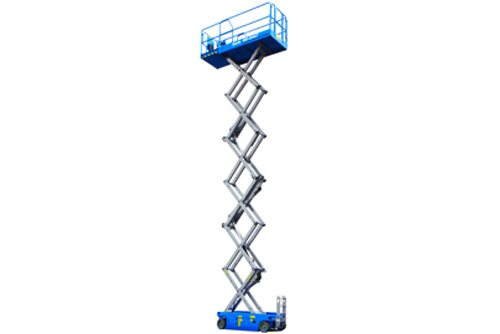
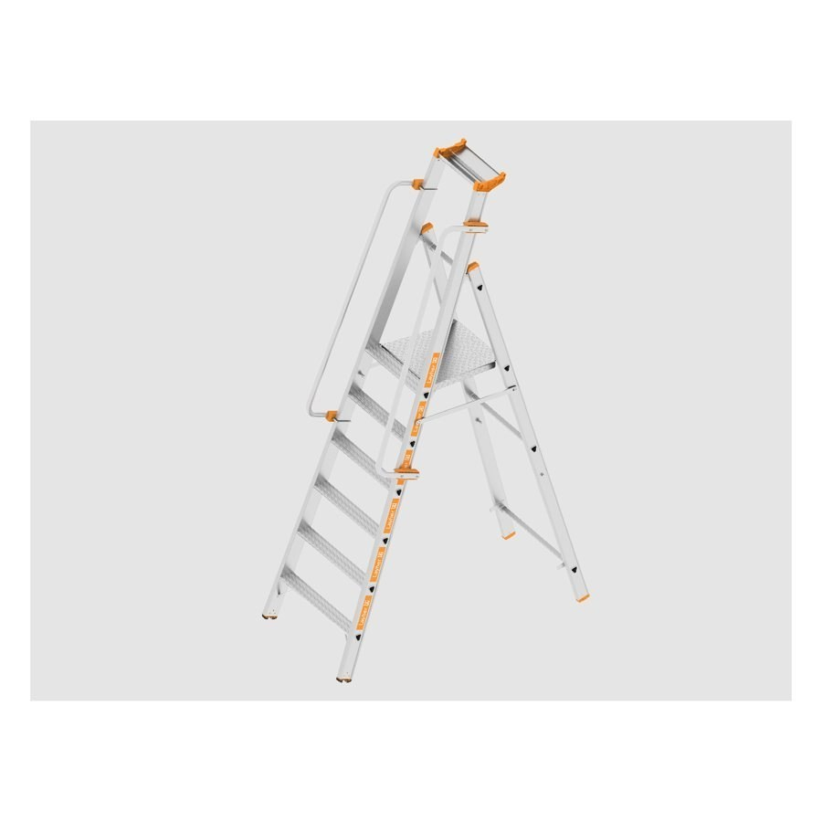
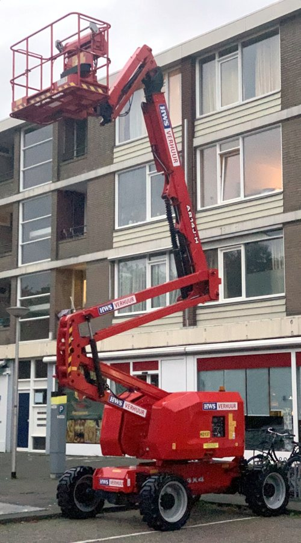
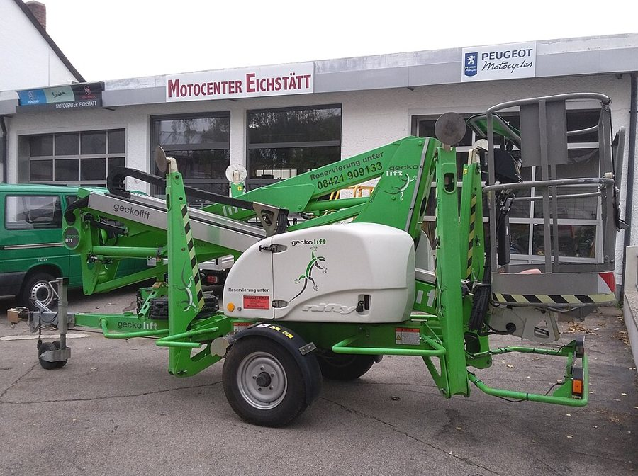
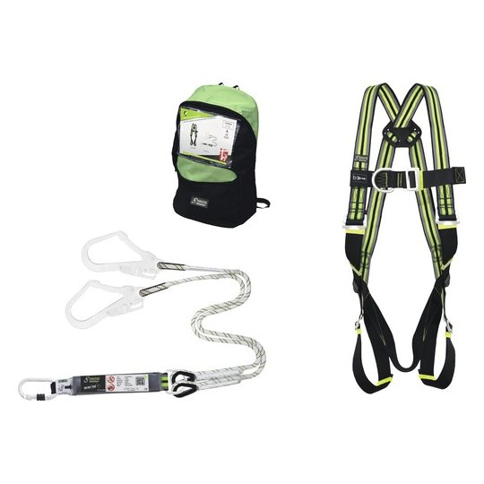
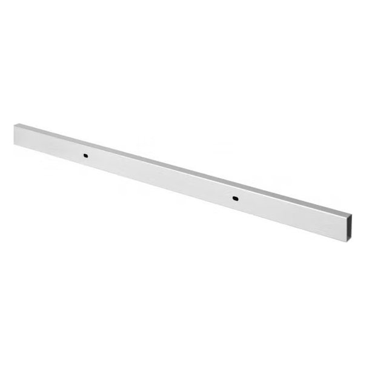
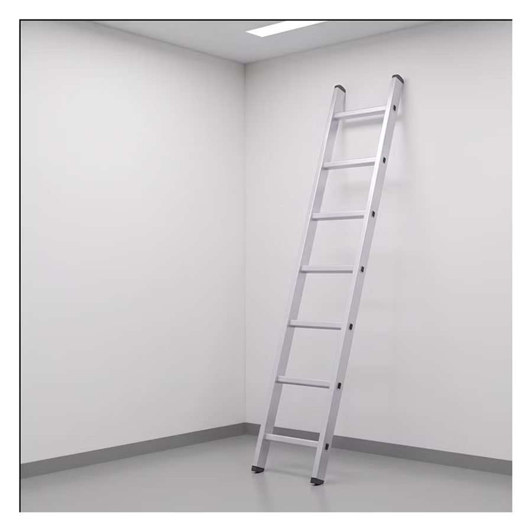

Abbildung ähnlich – zeigt den Produkttyp.
Alu-Stufen-Doppelleiter (Stehleiter) 2 x 6 Stufen, EN 131
Beidseitig begehbare Aluminium-Stehleiter mit 2 x 6 Stufen für Installations-, Maler- und Rückbauarbeiten in Innenräumen.
Die Alu-Doppelleiter ist das Standardwerkzeug für Arbeiten in Arbeitshöhen bis rund 3 m, etwa Installation, Malerarbeiten oder Rückbau von Deckenverkleidungen. Der Aluminiumholm mit rutschhemmenden Stufen und Spreizsicherung sorgt für sicheren Stand und geringes Gewicht beim Transport zwischen Geschossen. Professionelle Anwender in Deutschland erwarten eine Leiter der Bauart EN 131 Professional mit mindestens 150 kg Nennlast, lesbaren deutschen Warnhinweisen und Prüfbarkeit nach DGUV Information 208-016. Ein Prüfzeichen (z. B.
Technische Daten
| Material | Aluminium-Profil |
|---|---|
| Stufenzahl | 2 x 6, beidseitig begehbar |
| Nennlast | 150 kg |
| Stufentiefe | mind.; 80 mm |
| Stehhöhe | ca.; 1,3 m |
| Eigengewicht | ca.; 7 kg |
| Sicherung | Spreizsicherung, rutschhemmende Fußkappen |
| Zolltarifnummer (HS) | 76169990 |
EU-Normen und Vorschriften
EN 131-1Leitern: Benennungen, Bauarten, FunktionsmaßeEN 131-2Leitern: Anforderungen, Prüfung, KennzeichnungEN 131-3Leitern: BenutzerinformationGSGeprüfte SicherheitDGUV Information 208-016Handlungsanleitung für den Umgang mit Leitern und TrittenTRBS 2121 Teil 2Gefährdung von Beschäftigten durch Absturz: Verwendung von Leitern
Passt dazu
Weitere Produkte dieser Kategorie











